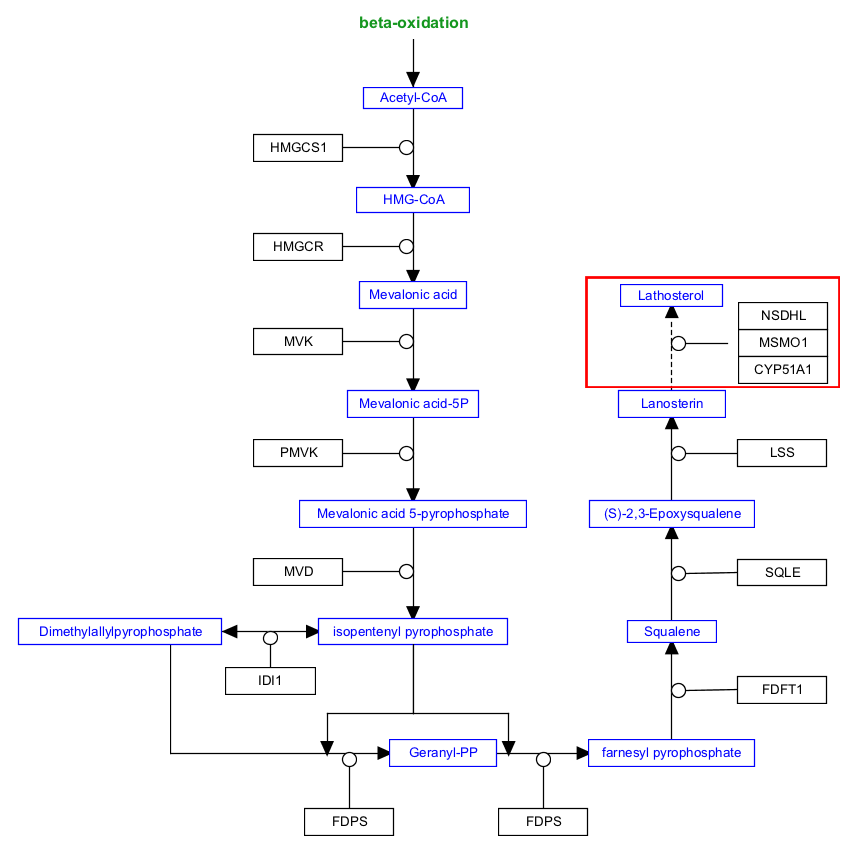

Background
Some biochemical reactions involve a large number of steps, and describing them all in a pathway diagram while maintaining an easy-to-read pathway can be difficult. To save space and maintain clarity, multi-step processes can be depicted as a dashed line indicating an indirect path. The enzymes involved in the multiple steps are then drawn as a group of enzymes.
Your Mission
Complete the multi-step conversion of lanosterin to lathosterol by a group of enzymes. The complete reaction corresponds to the highlighted area in this figure:
- To complete this challenge, click the "Launch Editor" button below. You will receive your challenge as a file named "WikiPathwaysAcademy-Challenge.jnlp". Open it to see your control panel.
-
Perform the challenge tasks...
- Select Met from the Data Node palette in the Objects tab
- Click on the canvas to place the node
- Double-click on the node to open its properties
- Search for “lathosterol”; Choose any of the entries that just say “lathosterol”; Click OK
- (Optional) Resize nodes or update node labels
- Select the mim-conversion arrow from the MIM interactions palette in the Objects tab
- Drag and drop anywhere on the canvas to create the interaction
- Select the conversion arrow, and in the Properties tab in the right side panel, change the Line Style to “dashed”
- Drag the plain end (start) of the interaction over a target area on the starting metabolite node (lanosterin)
- Drag the arrow end (end) of the interaction over a target area on the ending metabolite node (lathosterol)
- Right-click on the conversion arrow and select Add anchor
- Select Gene from the Data Node palette in the Objects tab
- Click on canvas to place the node
- Double-click on the node to open its properties
- Search for “CYP51A1”; Choose any of the entries that just say “CYP51A1”; Click OK
- Repeat the last 4 steps for two more enzymes: MSMO1 and NSDHL.
- (Optional) Resize nodes or update node labels
- Select all three enzyme nodes by click-and-drag. With all three nodes selected, right-click and select Group
- Select the mim-catalysis arrow from the MIM interactions palette in the Objects tab
- Drag and drop anywhere on the canvas to create the interaction
- Drag the plain end (start) of the interaction over a target area on the enzyme group
- Drag the catalysis end (end) of the interaction over the anchor on the conversion line
- (Optional) Align nodes using toolbar actions
- Done!
- When you have completed the challenge, save your work as a GPML file under File > Save As.
- Drag-n-drop the GPML file below to submit.

Click to download solution file (For Testing Only)